前言
由于普通无刷和有刷直流电机总是存在控制精度不够、旋转过程不平滑、扭矩抖动（没通电时转动的颗粒感）等等问题，所以本次主要研究永磁同步电机PMSM
永磁同步电机是复杂的非线性系统，为了简化模型，实现控制上的解耦，需要建立相应的坐标变换，即Clark变换和Park变换
1.驱动电路实现
无刷电机的驱动电路主要使用三项逆变电路来实现：
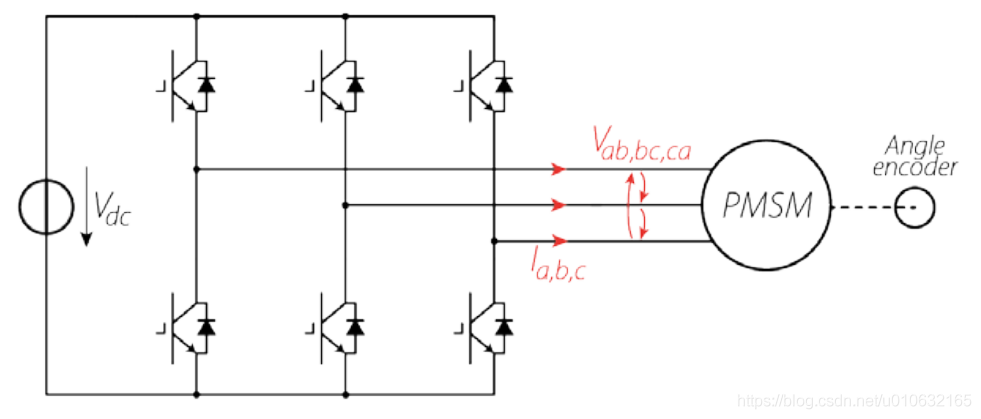
所谓逆变电路，即把直流电变换为交流电，或者简单点说就是一个可以产生不同电流流向的电路，通过前面的电机模型分析我们也可以看出，对于无刷电机的驱动是需要在不同时刻施加不同方向的电压（电流）的，因此需要逆变电路。
而逆变电路具体的实现则一般是采用半桥MOS电路来制作的。半桥电路的原型如下，其实很简单，就是两个MOS管组成的上桥臂和下桥臂，中间引出一条输出线：
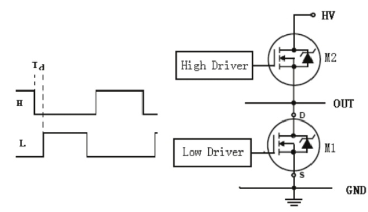
用3个半桥电路就可以组合成三相逆变电路，每个半桥引出的一根输出线跟无刷电机的一根相线相连，就完成了最基本的无刷驱动电路。
原理方面，MOS管可以看作电压控制的高速电子开关，在MOS管的栅极（上图中的High Drive和Low Drive）施加高电平或者低电平，就可以控制MOS源极和漏极的导通或者关闭。比如在下图中，我们打开第一组半桥的上桥臂、第二组和第三组半桥的下桥臂（其余的关闭），那么就可以让电流从电源正极流过电机的a相，流经b、c相，然后回到电源负极：
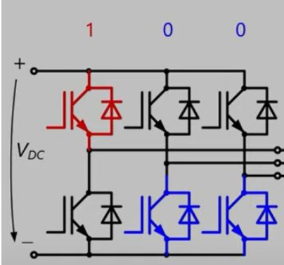
于是通过控制三个半桥的不同开关状态，我们可以控制电流在电机中的不同流向了。

在坐标系电压满足以下公式：
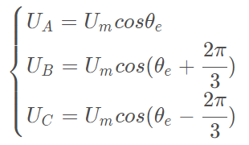
上述部分摘自博客
2.三相电机波形
在研究模型之前，我们先来观察一下三相电机的三相输出电压（反电动势产生的电压）
实际上也就是3根相位不同的正弦波：
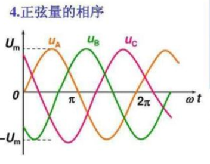
三相发电机的发电原理就是这样，输出的就是三相幅值为220V的交流电，（线电压为380V，即根号三220V）
发电机反过来就是电动机，如果对电机输入上面那种三相正弦电压（更换合适的幅值），那么就可以驱动无刷电机平稳高效的运转了
这就是FOC驱动电机的基本手段，即通过计算所需电压矢量，使用SVPWM技术产生调试型号，驱动三相逆变电路，合成出等效的三相正弦电压驱动电机
2.1FOC控制原理
老规矩，在了解之前我们先来看看FOC控制的整个流程图（这是电流环——内环）：
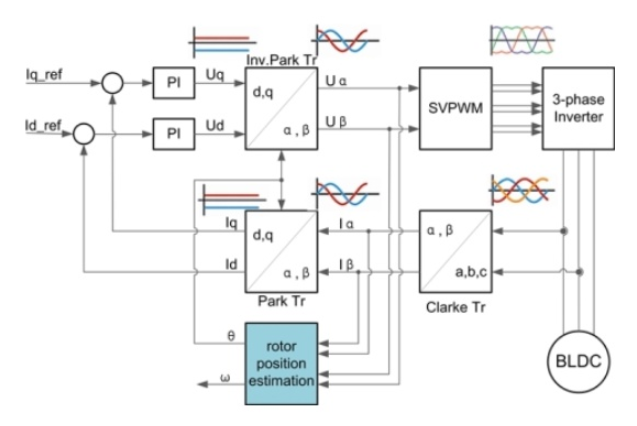
这个图挺复杂的，这里我来简单的解释一下：
Iq_Ref是q轴(交轴)电流设定值，Id_Ref是d轴(直轴)电流设定，关于交轴直轴不再介绍，大家自行百度
Ia, Ib, Ic分别是A相、B相、C相的采样电流，是可以直接通过AD采样得到的，通常直接采样其中两相，利用公式Ia+Ib+Ic=0计算得到第三相，电角度θ可以通过实时读取磁编码器的值计算得到
在得到三相电流和电角度后，即可以进行电流环的执行了：三相电流Ia, Ib, Ic经过Clark变换得到Iα, Iβ；然后经过Park变换得到Iq, Id；然后分别与他们的设定值Iq_Ref, Id_Ref计算误差值；然后分别将q轴电流误差值代入q轴电流PI环计算得到Vq，将d轴电流误差值代入d轴电流PI环计算得到Vd；然后对Vq, Vd进行反Park变换得到Vα, Vβ；然后经过SVPWM算法得到Va, Vb, Vc，最后输入到电机三相上。这样就完成了一次电流环的控制
当对PMSM进行速度控制的时候，需要在电流环外面加一个速度环，控制框图如下：
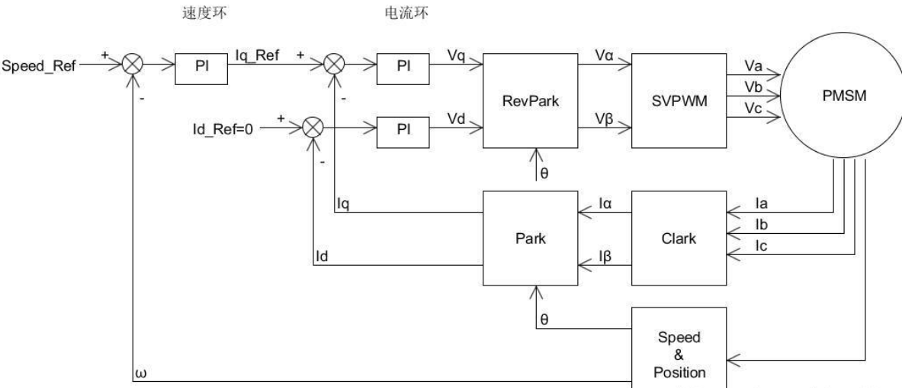
Speed_Ref是速度设定值，ω是电机的转速反馈，可以通过电机编码器计算得到， 将计算得到的电机速度ω与速度设定值Speed_Ref进行误差值计算，代入速度PI环，计算的结果作为电流环的输入
比较图二和图一的电流环部分可以发现，图二中d轴电流被设定为零(Id_Ref=0)，因为d轴电流对于驱动电机的转动不会产生输出力，所以通常情况下都会将d轴电流设定为零(但不是总是设定为0的)；当Id_Ref=0时，Iq_Ref就等于了速度环的输出；再结合上面的电流环，就实现了速度电流的双闭环控制
由于速度环在电子转动速度较慢时控制不精确的原因，我们将速度环改成位置环：
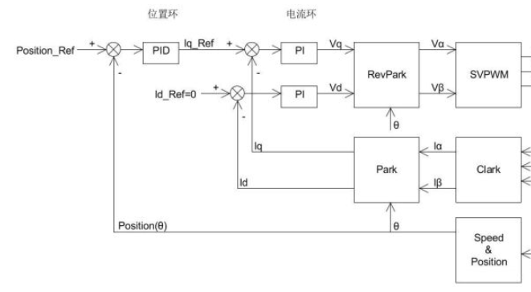
由于去掉了速度环，这里的位置环我们使用完整的PID控制，即把微分项加上（因为位置的微分就是速度，这样可以减小位置控制的震荡加快收敛；积分项的作用是为了消除静态误差）
这个图中除了PID以外，还有些东西没有解释：
- SVPWM
- Clark
- Park/RevPark
2.2Clark与Park变换
上文提到，如果要使得电机能够平稳丝滑的转动，那么就需要生成相位差为120°的三个正弦波，由于我们的MOS管只有开/关两种状态，所以如何生成变化的正弦波呢？
在PWM技术中有一种SPWM波，生成其的技术很简单，只需要让PWM的脉宽随着sin函数变化就可以，生成的波经过低通滤波器之后，就可以的到一条正弦波，如果用SPWM生成三条存在一定相位差的正弦波那么是不是就可以合成SVPWM呢？
很显然这种办法十分的麻烦，而且我们并不好在某一个时刻地里的控制电机的三相电压（据大佬说SPWM比SVPWM的利用率要低15%），所以我们要选用一种简单的方法
2.2.1Clark变换
根据基尔霍夫电流定律，我们可以得到：
I_a+I_b+I_c=0
由此可知，只要我们知道其中两个，就可以根据公式计算出另一个
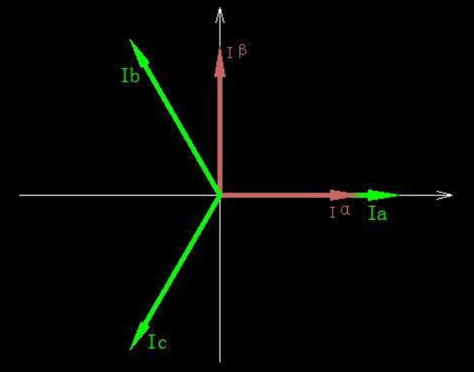
上图可以看见，在这个二维坐标系中，三相电流的分布
我们可以通过一定的变换，将它映射为Iα, Iβ
这其实就是个简单的投影计算，矩阵式如下：
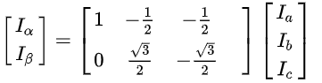
变换结果如下：
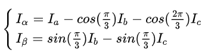
动图：

现在我们只需要控制Iα, Iβ就可以控制电机旋转了
但是，要注意的是，当我们实际控制电机的时候，要将Iα, Iβ反变换回去
这样一来依然很麻烦，因为我们控制的依然还是正弦波，不过是少了一个相的控制
这里我们可以引入Park变换
2.2.2Park变换
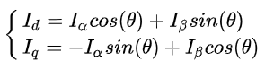
上图是变换公式，θ是转子当前角度
矩阵式：
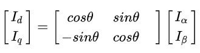
由于θ是转子当前角度，所以Park变换之后的坐标系是跟着转子旋转的
变换之后的变量已经成了一个线性的，甚至是一数，如果我们向编码器输入一个实时角度，经过这一步变换，我们可以看到，一个匀速旋转的向量在这个坐标系下变成了一个定值
动图：

2.2.3SVPWM
SVPWM的全称是空间矢量脉宽调制(Space Vector Pulse Width Modulation)，是由三相功率逆变器的六个功率开关元件组成的特定开关模式产生的脉宽调制波，能够使输出电流波形尽可能接近于理想的正弦波形。理论基础是平均值等效原理，即在一个开关周期内通过对基本电压矢量加 以组合，使其平均值与给定电压矢量相等
将母线电压写为三相电压为：
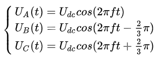
下面讨论一下空间电压矢量：
由于三相逆变电路在某一个时刻只会有一个臂导通，所以我们可以得到八种开关方式，其中有六种是非零向量

由此，我们可以的到一个电压矢量的坐标图：
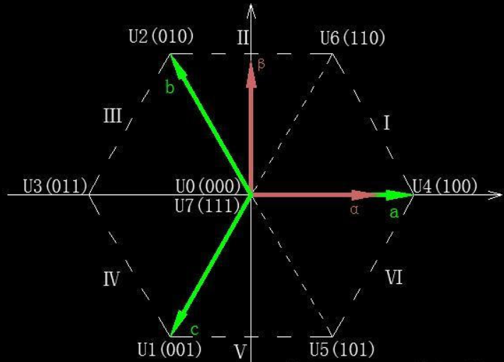
和电压矢量表：
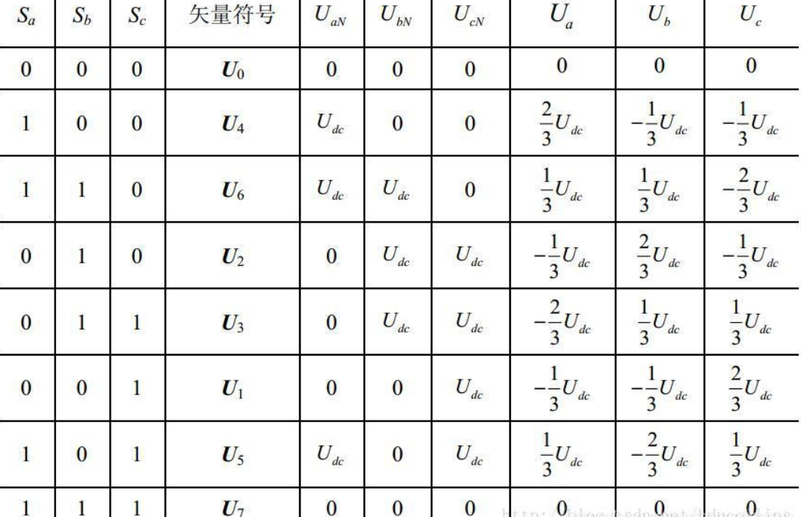
由于这六个扇区只能产生六个方向的力矩，如果需要产生任意方向的力矩，我们需要引入SVPWM
按照伏秒平衡原则来合成每个扇区内的任意电压矢量，即：
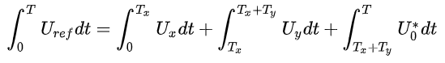
离散形式：
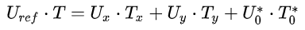
式子中的Uref是我们期望得到的电压矢量，T是一个PWM周期。
Ux,Uy是用于合成Uref的两个空间电压矢量，是六个基向量之中的两个，是哪两个与所在扇区有关
上面公式的含义就是：我们可以周期性地在不同空间电压矢量之间切换，只要合理地配置不同基向量在一个周期中的占空比，就可以合成出等效的任意空间电压矢量了
这与PWM的思想非常相像，也就是它名字的来源SVPWM（空间电压矢量脉宽调制）
举个例子，当Uref在U4与U6之间：
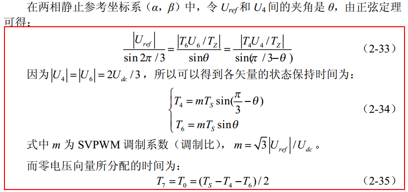
现在一个周期内所有状态的持续时间我们都得到了，还差一个顺序，也就是各个状态切换的顺序。
虽然说任意顺序都可以，但是我们需要考虑MOS的损耗问题，所以尽可能的减少MOS管的开关次数，如下图：
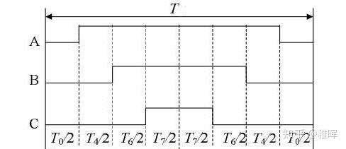
上图中可以看出来，在每个状态切换的时候，都只有一个相发生了转变：000->100->110->111->110->100->000，这也是所谓的七段式SVPWM调制法
同时我们通过在合理的位置插入两个零矢量，并且对零矢量在时间上进行了平均分配，以使产生的PWM对称，从而有效地降低了PWM的谐波分量
同理，我们也可以列出在其他扇区时的切换顺序：

至此，SVPWM的工作完成了，我们得到了每一时刻所需要的空间电压矢量以及它们持续的时间，在处理器中赋值给对应通道的捕获比较寄存器产生相应的三个PWM波形，控制MOS管的开关，进而产生我们期望的电压、电流、力矩
以上就是对原理的阐述，下面有一些我自己的见解和补充
3.SVPWM算法原理部分补充
SVPWM是近年发展的一种比较新颖的控制方法，是由三相功率逆变器的六个功率开关元件组成的特定开关模式产生的脉宽调制波，能够使输出电流波形尽可能接近于理想的正弦波形。空间电压矢量PWM与传统的正弦PWM不同，它是从三相输出电压的整体效果出发，着眼于如何使电机获得理想圆形磁链轨迹。SVPWM技术与SPWM相比较，绕组电流波形的谐波成分小，使得电机转矩脉动降低，旋转磁场更逼近圆形，而且使直流母线电压的利用率有了很大提高，且更易于实现数字化（这就是为何SPWM能量损耗高于SVPWM的原因了）
通俗化理解：把PMSM想象成两块同心的磁铁，两块磁铁是相吸的，因此当用手拨动外面的磁铁绕组圆心转动时，里面的磁铁也会跟着转动，这其实就是PMSM的本质了。PMSM的转子是永磁铁，定子是绕组，我们用电路控制定子绕组产生旋转的磁场，里面的转子磁铁就会跟着转动，这个磁场的大小最好恒定，不然一会儿大一会儿小，转子受到的牵引力也就一会儿大一会儿小，影响运动性能。好了，现在我们知道电机的本质是什么了。接下来，我们需要一个算法来控制定子绕组的输出，使其产生一个恒定的旋转磁场，这个算法就是SVPWM
要得到一个恒定大小的旋转磁场，可以先来得到一个恒定大小的旋转电压矢量。如下图：

在SPWM中，占空比越大，电压越大；占空比越小，电压越小。让占空比呈正弦变化，电压值自然也就呈正弦变化了
我们如何判断自己在那个扇区呢？
由于相电压同一时刻不会同为零同为一，所以我们可以用一个式子来判断，令N=4C+2B+A
A为Ua
B为Ub
C为Uc
通过下表可以的到扇区对应关系
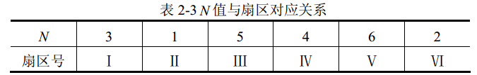
下面是六个扇区对应的完整版
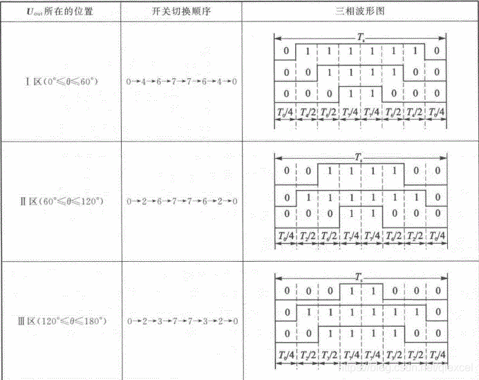
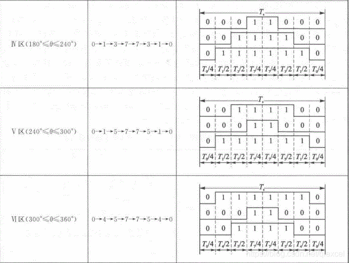
所有扇区矢量作用时间

经过上面的补充，FOC与SVPWM的对接就变成了，先根据N=4C+2B+A判断合成矢量所在扇区，然后查表2-4得出两非零矢量的作用时间，最后得出三相开关管PWM波的占空比，查表让算法更高效
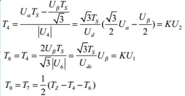
由此公式可知：
当两个零电压矢量作用时间为0时，一个PWM周期内非零电压矢量的作用时间最长，此时的合成空间电压矢量幅值最大，由下图可知其幅值最大不会超过图中所示的正六边形边界。而当合成矢量落在该边界之外时，将发生过调制，逆变器输出电压波形将发生失真。在SVPWM调制模式下，逆变器能够输出的最大不失真圆形旋转电压矢量为图2-12所示虚线正六边形的内切圆，其幅值为： (√3/ 2)x(2U**dc/ 3) =√3U**dc/3 。即逆变器输出的不失真最大正弦相电压幅值为√3U**dc /3 ，而若采用三相SPWM调制，逆变器能输出的不失真 最大正弦相电压幅值为Udc/2。显然SVPWM 调制模式下对直流侧电压利用率更高，它们的直流利用率之比为(√3U**dc/ 3) /(U**dc/ 2) =1.1547 ，即SVPWM算法比SPWM算法的直流电压利用率提高了15.47%（这就是上述文章中15%的来源）

如图当合成电压矢量端点落在正六边形与外接圆之间时，已发生过调制，输出电压将发生失真，必须采取过调制处理，这里采用一种比例缩小算法。定义每个扇区中先发生的矢量用为Tx，后发生的矢量为 Ty。当 Tx+Ty≤TS时，矢量端点在正六边形之内，不发生过调制；当Tx+Ty>TS时，矢量端点超出正六边形，发生过调制。输出的波形会出现严重的失真，需采取以下措施：
设将电压矢量端点轨迹端点拉回至正六边形内切圆内时两非零矢量作用时间分别为 Tx‘，Ty‘，则有比例关系：
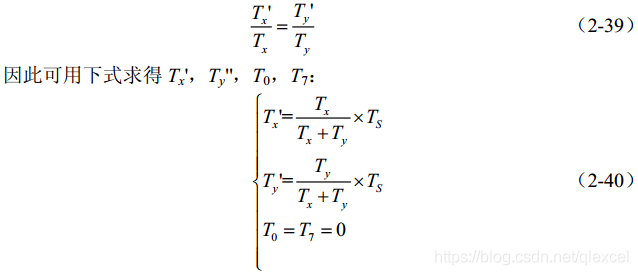
使用上面的简单比例关系，把两个非零矢量作用时间矫正好
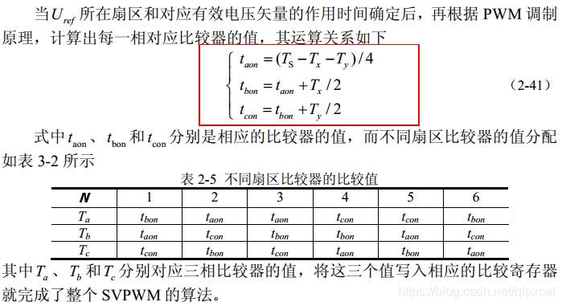
taon、tbon、tcon的波形呈马鞍形，如下：
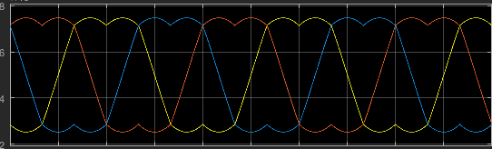
参考：
https://zhuanlan.zhihu.com/p/147659820
https://blog.csdn.net/qlexcel/article/details/74787619#comments
更详细的公式推导请见